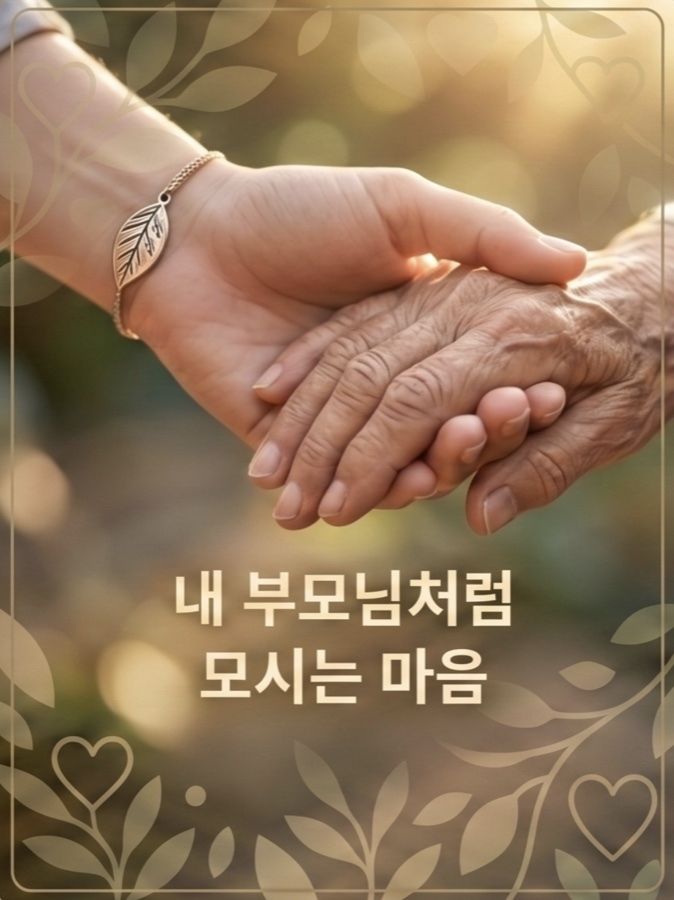
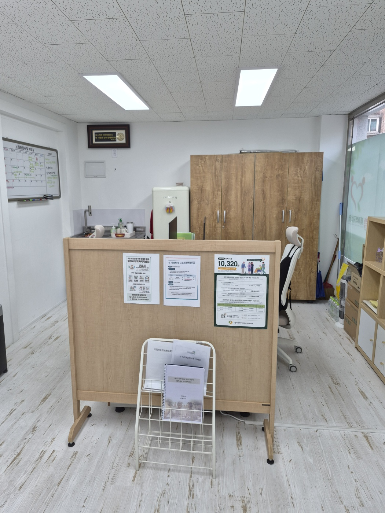
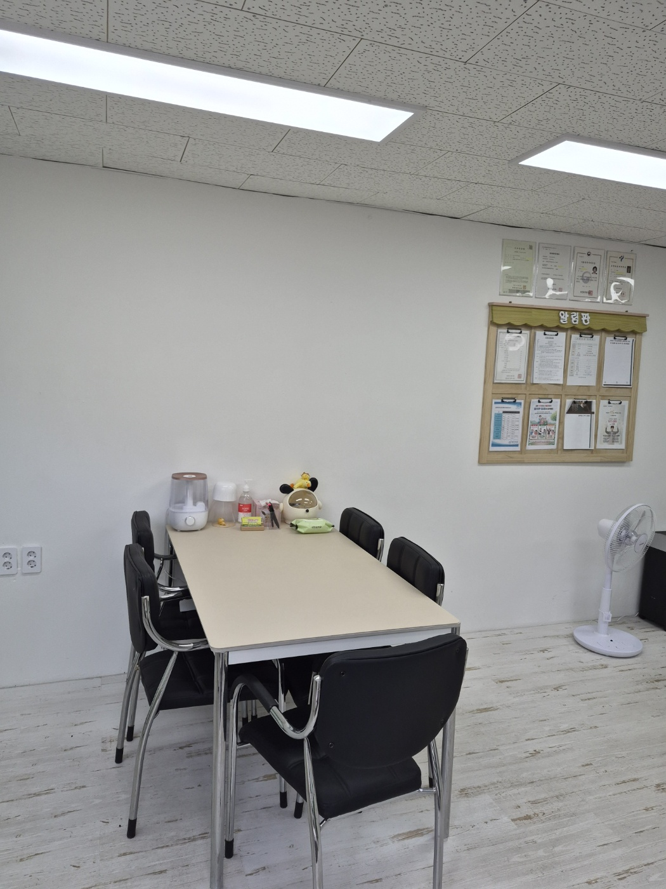

따뜻한 마음으로 어르신을 모시는 엄마사랑 재가복지센터입니다

안녕하세요. 엄마사랑 재가복지센터를 찾아주신 여러분을 진심으로 환영합니다.
안녕하세요. 엄마사랑 재가복지센터입니다. 저희 센터는 어르신 한 분 한 분을 내 부모님처럼 모신다는 진실된 마음으로 시작했습니다. 어르신께서 나이가 드셔도 가장 익숙한 집과 사랑하는 가족 곁에서 존엄하고 편안한 일상을 이어가실 수 있도록, 전문적인 케어와 따뜻한 정성으로 함께하겠습니다.
국가 자격을 갖춘 전문 요양보호사가 어르신의 건강과 생활을 세심하게 살피며, 보호자님께서 늘 안심하실 수 있도록 투명하게 소통하겠습니다. 어르신의 행복한 노후가 곧 저희의 가장 큰 보람입니다.
도움이 필요하시다면 언제든 편하게 문의해 주십시오. 늘 처음과 같은 마음으로 정성을 다하겠습니다. 감사합니다.
엄마사랑 재가복지센터 센터장 유 윤 희 드림
어르신이 안심하고 머무실 수 있도록 쾌적하고 안전한 공간을 갖추고 있습니다
저희 엄마사랑 재가복지센터는 '1층'에 위치하며 심신이 허약하신 어르신들도 계단이나 엘리베이터의 불편함 없이 안전하고 편리하게 진출입하실 수 있습니다.

장기요양등급 신청, 서류 대행, 각종 행정 업무를 지원합니다. 복잡한 절차를 친절하게 안내해 드립니다.

어르신과 보호자가 편안하게 상담받으실 수 있는 공간입니다. 개인정보를 보호하며 1:1 맞춤 상담을 진행합니다.
전문 상담사가 친절하게 안내해드립니다